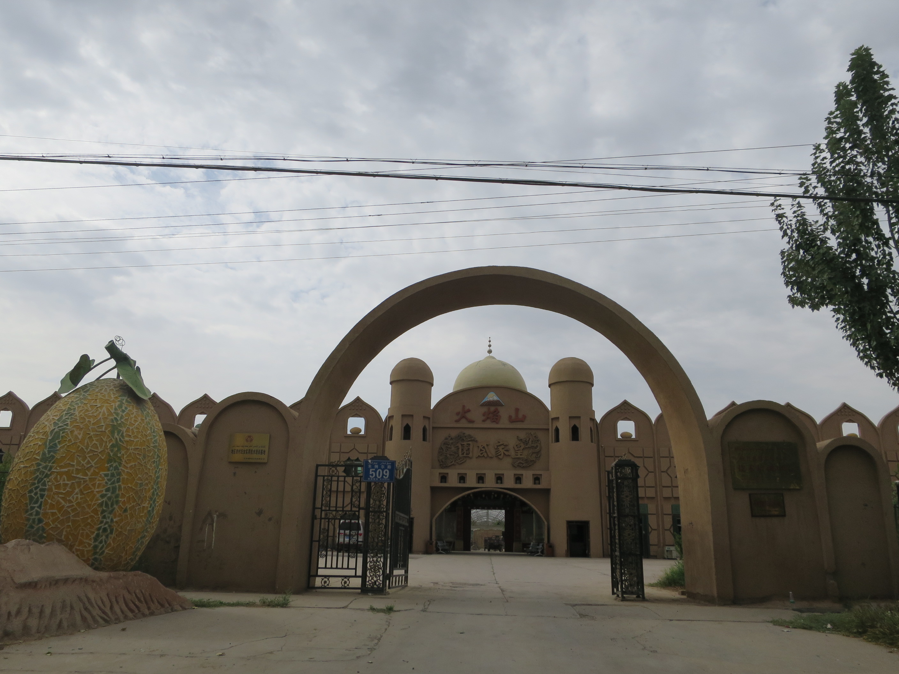
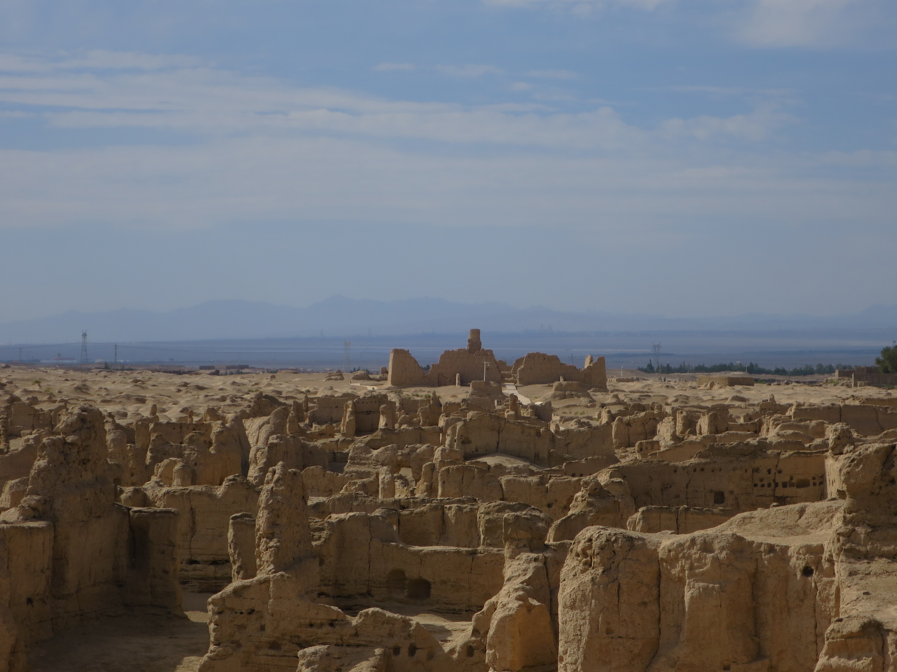

2015-07-31
昨天實在很失策，有錢唔識使都係一個問題。今天就不同，去的地方全都是自己去，坐公共交通，或行路。在旅舍附近的一間清真牛肉麵店吃早餐，除了這些早點，我真的不知道還有什麼好吃的。除了牛麵，還有茶葉蛋，以及像熱水沖出來的豆漿。
今天只去三個地方，Emin 塔、博物館和交河故城。向東行去 Emin 塔，問問路，很容易找到，沿路見很多賣提子的販，似乎是批發的樣子，買的人都買很多，用旁邊的磅磅重計錢。在街上小商店很容易見到寫著當地出產的無核葡萄，還見到些葡萄廠。
Emin 塔很多人，塔前的紀念品檔排成一條引你去入口的路，我沒有買票進入，因為聽說在外面看和入場看差不多，入場也不能進入的。不過在外面也不容易找到一個角度可以好好地看的，Emin 塔上一點是另一個類似主題公園的物體，什麼王府的，也是要收費，也沒入場，不過在這個什麼府的門口反而遠看 Emin 塔是不錯。
早上天氣不錯，不時有雲，不過中午之後的陽光就猛烈得很，我竟然擔遮。
吐魯番的博物館很好，不過入去前要寄存隨身手袋，而寄存的地方卻不在正門附近而在樓下。這博物館好好行，不過又遇上些在大聲講電話的人，不時避開。館內存放很多乾屍，有一具乾得嚟怪怪地濕濕地咁…另外有一具屍的服裝，很像我們疆屍片跳跳下那種，原來是來自中原的人。
市中心有一條設計得不錯的通道，上蓋用些植物來舖著，還掛著些提子，我懷疑不是真的。不過大熱天時，躲在這裏坐坐也不錯，反正熱到午餐也吃不完，汗就是不斷流。
坐巴士向西行直到最後一個站亞爾鄉下車，然後再行數公里就到交河故城，不過下車後在士多買嘢飲時正好有人問我要不要載我去交河故城，便付數元上車去了。去到交河故城入口，付了入場費，一位女子問我要不要導遊服務，一百元一個導遊，可帶四個人。我正想有導遊，一對一導遊更好，她的講解很清楚詳細，原來她是大學生，讀的也是和古蹟有關的。
交河故城是河中中間一片地，把河分開，不過現在這河也乾了。基本上只是一片黃土，部分建築的基礎才留下來，因為有導遊，才會知道一些別的事情，例如人們是如何推測這是貴族區還是平民區，全個故城唯一的一棵仍活下的植物，以及最近才發挖到很多乾屍的一片地方。
導遊不會帶我遊遍整個城，西面的三分之二的地區則我自己行，她提我一定要多喝水。真的非常熱，不過我撐著傘已經很好。行到去最遠可以到達的地方，是一座佛塔，這裏很寧靜，沒有入口附近的喧鬧，甚至只有我一個人，很舒服，不過熱到頂唔順，快快回去離開。
然後就是步行回亞爾鄉，中間經過一個什麼維族文化村，沒進去。想不到這段路很遠，行了很久很久，大既九個字時間……再乘巴士回市中心。探探去客運站的路，明早可以行得順利點，旅舍的地圖是錯的，要問路才找到。
新疆有很多標語，尤其是在學校，更是加強洗腦，但都不及今天見到的一句噁心：「漢族離不開少數民族 少數民族離不開漢族」。
Turpan, is just another dusty city，我看著日落中的大街大馬路時想起這句，是之前我在考慮多留喀什一天還是早一天來到吐魯番的時候，S 的回應。


